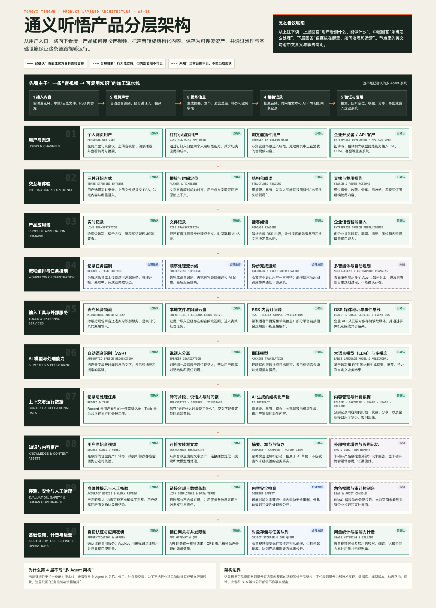

01｜执行摘要
听 → 读
把线性音视频转成可扫读、可定位的文本与摘要。 E01 E06
首屏可读
用户第一次看到带时间戳的转写及概要/章节，而不是等完整听完。 E06
B2C + API
个人应用免费入口与企业接口并存；商业化重点可确认在 API 用量。 E08 E12
可信 + 隐私
ASR 错误会向摘要传播，会议数据又天然可能敏感。 E07 E15
AI 在价值链中的角色
感知与结构化
把实时音频、上传文件或 RSS 内容转为时间轴文本，区分发言人，并形成可检索记录。 E01 E02 E06 E10
生成与提炼
产出全文摘要、章节、发言总结、问答回顾、待办、关键词等；企业接口还支持自定义 Prompt。 E06 E10 E11
判断与执行
未看到系统替用户执行会议决策、自动发任务或自动写入外部业务系统；分享也未被本轮触发。
02｜证据范围与边界
本轮已查看
- S01：登录后首页导航和三类入口
- S02：播客 RSS 配置弹窗
- S03：上传音视频入口弹窗
- S04：我的记录页顶部控件
- S05：公开“发现”播客页
- S06：公开播客记录详情
- O01–O07：阿里云官方产品、API、价格、更新与服务协议
主动未执行
- 未开启麦克风或实时记录
- 未上传任何本地/云盘文件
- 未提交 RSS 链接或触发转写
- 未分享、导出、收藏、删除或购买
- 未打开用户私人记录详情
因此对实际耗时、失败恢复、导出格式、权限确认和付费拦截保持未知。
产品路由
AI 通用核心
助手 / Copilot 信息整理与建议，不自动执行。
企业 AI / SaaS API、AppKey、用量与接口计费。
多模态 音视频、PPT 提取与文本生成。
搜索 / RAG 有记录搜索，但未确认 RAG 或跨记录问答。
03｜用户、场景、价值与替代方案
| 用户 / 场景 | 原始痛点 | 通义听悟提供的价值 | 失败代价 | 证据 |
|---|---|---|---|---|
| 会议参与者、项目负责人 | 记录分散；会后难回看、难找决策与待办 | 实时字幕、完整转写、章节/摘要和待办提炼 | 错记责任人、时间或结论，影响执行 | E01 E09 E10 |
| 访谈、面试、销售、客服 | 交流密度高，手记打断沟通；复盘成本高 | 说话人分离、问答/需求提取、服务质检能力 | 错误归因或漏掉敏感承诺 | E08 E10 E14 |
| 学生、教师、研究者 | 长课程与外语资料难定位，复习依赖从头播放 | 转写、翻译、主题分段、摘要与时间定位 | 摘要遗漏或术语识别错误影响理解 | E08 E09 |
| 播客听众、媒体从业者 | 播客消费时间长，缺少文本检索和内容预览 | RSS 解析、发现/订阅、章节速览、全文阅读 | 平台链接限制、版权和摘要准确性 | E02 E05 E06 |
| 企业开发者与业务系统 | OA/IM/CRM 中缺少统一语音理解组件 | API 化的实时/离线转写、翻译、大模型提炼与回调 | 数据合规、成本叠加、接口失败与状态不一致 | E08 E10 E12 |
一句话价值主张
让用户不必完整重听，就能从音视频中快速获得“原文证据 + 时间定位 + 结构化结论”；让企业不必自建完整语音与大模型链路，就能把同一能力嵌入业务流程。
替代方案
低成本、强主观筛选，但遗漏多且不可全文回溯。
能回看但缺少结构化摘要、任务和跨记录管理。
解决“转文字”，但不一定覆盖摘要、章节、发现与业务提取。
与日历/IM/任务更紧，但在开放音视频与播客消费上未必同构。
04｜端到端用户旅程
首页选择实时记录、上传音视频或播客 RSS。
E01设置语种、翻译、发言人数；上传可选本地或阿里云盘。
E02 E03实时音频推流、文件上传或 RSS 解析。
E02 E10ASR、说话人分离、翻译，结束后进入 AI 纪要提取。
E10播放、看全文、按时间定位，浏览概要、章节和发言人。
E06 E07搜索、收藏、分享、回收站；公开播客可发现与订阅。
E01 E04 E05六流泳道
关键分支与断点
输入合规拦截
RSS 弹窗明确列出部分视频网站链接不能直接解析，并建议先下载后使用；未输入链接时“开始转写”不可用。 E02
处理中断与恢复
Web 页面未实际触发任务，无法确认上传失败、断网、取消、重试、失败是否扣额度，以及恢复点。
人工纠错闭环
本轮公开结果页未看到逐字稿编辑、说话人纠正、摘要反馈及上游修改后的下游失效机制。
05｜AI 能力契约
| 能力 | 用户问题 | 输入 / 上下文 | 输出 | 自主级别 | 验证与降级 | 证据 |
|---|---|---|---|---|---|---|
| 实时语音转写 | 开会时如何不漏记 | 麦克风/音频流、采样率、语种 | 增量转写、时间信息；可翻译 | 1 信息展示 | 官方 API 说明尾点延迟约 300ms，但具体 Web 表现未测；噪音和断流策略未测 | E01 E10 E14 |
| 离线音视频转写 | 如何快速读完长录音/视频 | 本地文件、阿里云盘文件、语种 | 全文、时间戳、说话人 | 1 信息展示 | 官方 FAQ 称一般 3 小时内完成；本轮未上传验证 | E03 E06 E14 |
| 说话人分离 / 身份 | 是谁说了什么 | 音频、发言人数提示；API 可配 SpeakerCount | SpeakerID / 发言人分段 | 1 信息展示 | 多人重叠、错分和人工修正机制未知 | E02 E06 E10 E13 |
| 翻译 | 如何理解跨语种会议和课程 | 源语言、目标语言、转写文本 | 实时或离线译文 | 3 生成草稿 | 模型与术语一致性需人工验证；API 按目标语种叠加计费 | E02 E10 E12 E13 |
| 大模型摘要与章节 | 如何快速抓重点并定位 | 转写结果、发言人、时间戳 | 全文概要、章节、发言总结、问答回顾、思维导图等 | 3 生成草稿 | 页面明确不保证 AI 内容准确和完整；当前无逐句引用 | E06 E07 E10 |
| 要点与业务提取 | 如何获得待办、关键词、客户需求 | 转写 + 业务维度 | 待办、重点、场景、质检、对话内容提取 | 3 生成草稿 | 角色识别错误会污染归责；需要人工确认后再进入业务系统 | E10 E13 |
| 自定义 Prompt（API） | 标准摘要不符合业务格式怎么办 | Prompt + {Transcription}；可选模型 | 自定义结构或判定结果 | 3 生成草稿 | 输入超限可能截断；结果字段可报告 Truncated；多 Prompt 叠加计费 | E11 E12 |
| 记录搜索与发现 | 如何找到过去内容或先预览播客 | 关键词、记录索引、公开订阅源 | 记录/节目与章节预览 | 1 信息展示 | 排序、召回、权限过滤和跨记录语义搜索机制未知 | E04 E05 |
06｜Agent、工作流、模型与工具
可观察工作流
麦克风 / 文件 / 云盘 / RSS
E01–E03
Create / 推流 / End / 查询状态
E10
ASR / 说话人 / 翻译
E10
摘要 / 章节 / 待办 / 自定义 Prompt
E10 E11
Record 详情 / 搜索索引 / 分享
E04–E06
组件 I/O 契约
| 能力组件 | 触发 / 上游 | 核心输入 | 输出 / 下游 | 完成条件 | 异常与边界 | 等级 |
|---|---|---|---|---|---|---|
| 接入与任务控制 | 用户开始记录、上传或提交 RSS | 身份、媒体源、语言、参数、权限 | Record/Task、推流地址或处理任务 | 任务创建且具备可追踪状态 | Web 端任务状态与幂等键不可见 | 合理推断 |
| 语音识别组件 | 音频流或文件就绪 | 音频、格式、采样率、语种、热词 | 句子、时间戳、SpeakerID、识别状态 | 结束输入且生成可读转写 | 噪音、重叠说话、专有名词误识别 | 已确认 |
| 翻译组件 | 用户启用翻译 | 源语言/混合语种、目标语种、转写 | 译文与时间信息 | 目标语种结果返回 | 多目标语言成本叠加；术语一致性未知 | 已确认 |
| AI 纪要组件 | 记录结束后进入后处理 | 转写、发言人、句子ID、能力开关 | 摘要、章节、发言总结、问答等 | 选定产物完成并可显示/回调 | 内容可能不准或不完整；长文本截断 | 已确认 |
| 记录检索与交付 | 结果生成或用户搜索/打开 | 记录、索引、用户权限、分享状态 | 列表、详情、播放定位、导出/分享 | 用户能回到原文完成核验 | 搜索算法、租户过滤、导出权限未知 | 合理推断 |
模型与路由证据
官方能力目录
- 产品概述明确依托千问语言模型与音视频 AI 模型。 E08
- 自定义 Prompt 文档列出 tingwu-turbo、tingwu-plus、qwen-max。 E11
- 2025 更新记录列出 qwen-plus、qwq、ccai-pro 可选，并出现 fun-asr 与 qwen-mt。 E13
不能据此确认
- 当前 Web 消费端实际调用哪个模型。
- 不同文档中的模型列表是否对应不同 API 版本、能力或时间点。
- 是否按语种、长度、套餐、质量或成本动态路由。
- 是否有自动回退、A/B、Prompt 版本与模型版本可见性。
07｜上下文、知识、数据实体与状态
上下文对象
| 对象 | 内容 | 生产者 → 消费者 | 作用域 | 权限 / 时效 | 证据与未知 |
|---|---|---|---|---|---|
| IdentityContext | 用户身份、应用/项目、AppKey、套餐 | 认证 → Web/API/计费 | 用户/企业项目 | API 需 AppKey；Web 角色和 RBAC 未见 | E10 Web RBAC 未知 |
| RequestContext | 媒体源、语言、翻译、发言人数、能力开关 | 用户 → 任务控制 | 单次记录 | RSS 受平台合规限制 | E02 E03 E10 |
| TaskContext | 创建、推流、结束、处理、结果状态 | 控制服务 → UI/回调 | Record/Task | API 可查询；Web 唯一事实源未知 | E10 |
| TranscriptContext | 句子、时间戳、发言人、语种、译文 | ASR/翻译 → 播放/摘要/搜索 | 单条记录 | 原文是派生产物的关键依据 | E06 E10 |
| AIArtifactContext | 摘要、章节、问答、待办、思维导图、自定义结果 | 大模型 → 详情页/API 回调 | 记录 + 能力 + 模型/Prompt 版本 | 版本与失效规则不可见 | E06 E10 E11 |
| KnowledgeContext | 本条转写内容；可能含用户业务规则 | 记录/Prompt → 大模型 | 任务私有 | 未确认外部知识检索或 RAG | RAG 未知 |
| BillingContext | 音频时长、能力项、Prompt 数、目标语种、用量 | 调用 → 计费 | 账号/AppKey | 各能力可能叠加；失败补偿细节未知 | E12 E13 |
| MemoryContext | 跨记录长期偏好、用户事实 | — | — | 页面无长期记忆证据 | 未知 |
记录状态机
【已确认】 API 文档确认创建—推流—结束—查询—AI 纪要阶段；【合理推断】 状态机将这些接口阶段与 Web 导航对象统一表达；收藏、分享、回收站只确认入口存在，未执行状态变更。
核心数据实体与关系
Summary / Chapter / ActionItem
08｜产品分层架构（As-Is）
线型说明：实线绿色为已确认；蓝色虚线为合理推断；灰紫虚线为未知。数据库、队列、向量库、语言与具体云资源未公开，因此不作事实断言。
展开解释版：中英术语对照与组件职责

09｜商业化、运营与增长循环
个人端：免费入口 + 内容消费
- 官方文档称个人客户可通过网站、钉钉小程序和浏览器插件免费使用。 E08
- 首页把“实时记录、上传、播客 RSS”作为三个激活入口。 E01
- 发现/订阅把一次性工具扩展成持续内容消费入口。 E05
- 个人端精确额度、会员层级和付费边界，本轮页面未确认。 未知
企业端：后付费 API
- 新版 ASR：实时或文件转写 0.6 元/小时。 E12
- 多数大模型能力：每项 0.064 元/小时，多能力/多 Prompt 叠加。 E12
- 质检/内容提取 0.13 元/小时；PPT 多模态 0.64；实时翻译 4；离线翻译 0.5。 E12
- 免费试用 90 天；实时与文件额度、并发限制按官方当前计费页执行。 E12
增长与留存循环
实时 / 文件 / RSS
转写 + 摘要
搜索 / 回听 / 导出
我的记录 / 订阅
建议指标（不是现状事实）
激活
首次完成记录率、首份摘要打开率、首个时间定位点击率。
任务成功
用户验证后可用的摘要率、待办采纳率、导出/分享后完成率。
质量
WER、说话人错分率、摘要忠实度、章节边界准确率、关键项召回。
效率与成本
首字延迟、转写完成时长、后处理时长、每成功记录成本、失败补偿率。
10｜评测、信任、安全与隐私
三类“完成”必须拆开
音频已接入、ASR/模型调用返回，不代表内容正确。
Record 可读、产物齐全、索引可查、账单一致，才算系统任务完成。
用户核对后能可靠写纪要、复习、跟进任务或完成业务复盘，才算最终成功。
最小评测矩阵
| 层 | 主要指标 | Bad Case | 完成门 |
|---|---|---|---|
| ASR | 字错率、专名召回、时间戳偏差 | 噪声、中英混、方言、多人重叠、弱麦克风 | 低置信可见；关键专名可纠正 |
| 说话人 | DER、身份识别准确率 | 音色接近、插话、同设备远场 | 用户可改；下游归责随版本重算 |
| 摘要 / 章节 | 忠实度、覆盖率、边界质量 | 否定词、讽刺、跨章节结论、前后修正 | 每条可回跳证据；冲突不静默合并 |
| 待办 / 业务提取 | 实体、责任人、时间、动作精确率 | 讨论不等于承诺、建议不等于决定 | 用户确认后才能外发或写入系统 |
| 权限 / 隐私 | 越权率、误分享率、删除完成率 | 跨租户、分享链接转发、回收站与备份不一致 | 权限测试、审计可追溯、删除 SLA |
11｜As-Is / To-Be 与机会优先级
As-Is
- 以 Record 为中心，统一承载媒体、转写、AI 产物和播放定位。
- 个人 Web 强调三种输入和结果消费；发现页承担公开播客内容入口。
- 企业 API 把 ASR、翻译、大模型能力拆成可组合开关和用量计费单元。
- AI 内容有总体免责声明，但可信度主要依赖用户回看原文。
- 未观察到多 Agent、RAG、长期记忆和自动执行业务动作。
To-Be
- 建立 Transcript → AIArtifact 的证据图：每个摘要句、章节、待办绑定句子ID和时间区间。
- 引入版本与依赖失效：纠正原文/发言人后，受影响产物标记“需重算”。
- 建立统一任务事实源：采集、转写、AI 后处理、索引、账单分别可见，支持取消、恢复和补偿。
- 企业治理台：组织、RBAC、审计、保留、DLP、模型白名单、区域与成本预算。
- 把待办变成“需确认执行”的结构化草稿，再连接任务/日历/OA；支持撤销和幂等。
机会优先级
| 优先级 | 机会 | 对应问题 | 产品收益 | 验证方式 |
|---|---|---|---|---|
| P0 | 逐结论证据回跳 + 低置信提示 | 总体免责声明无法帮助用户定位哪一句可能错 | 提升信任、降低误采纳 | 摘要纠错率、回跳后修改率、错误采纳率 |
| P0 | 企业权限与数据生命周期可视化 | 会议数据敏感，Web 端治理能力未见 | 提升企业采购可解释性 | 权限穿透测试、删除 SLA、审计覆盖 |
| P1 | 原文纠错 → 派生结果失效/重算 | 错误会沿 ASR → 摘要 → 待办传播 | 形成可治理的内容供应链 | 依赖命中率、重算一致性、人工耗时 |
| P1 | 调用前成本预估与 Record 级账单 | 多个能力和 Prompt 叠加计费 | 降低意外成本、促进可控试用 | 超预算率、账单争议率、成本/成功记录 |
| P1 | 结构化待办确认后写入协作系统 | 当前价值停在“看懂”，未确认进入“执行闭环” | 从内容工具升级为会议 Copilot | 待办采纳率、执行完成率、误创建率 |
| 验证项 | 跨记录语义检索 / 私有知识问答 | 当前只确认搜索入口，未确认 RAG | 提升历史资产复用 | 先验证用户是否需要跨记录问答及权限模型 |
最值得继续验证的 10 个问题
- 用户能否直接编辑转写文本、时间戳与发言人？修改后摘要是否自动失效？
- 上传/实时记录的任务状态、取消、断点恢复和失败重试如何呈现？
- 失败、取消、无声音和重复重试如何扣额度或补偿？
- 个人 Web 端的免费额度、付费边界、导出格式与分享权限是什么？
- “搜索”是关键词、语义检索还是跨记录问答？是否逐租户过滤？
- 分享链接是否有密码、到期、下载限制、撤销与访问审计？
- 是否提供企业组织、角色、数据保留、区域、DLP 与模型策略控制？
- 当前 Web 端实际使用哪些 ASR、翻译和大模型版本？可否查看版本元数据？
- 摘要/待办能否逐条追溯到原文句子ID？是否有用户反馈与申诉闭环？
- 播客发现内容的授权、下架、订阅同步和公开分享规则是什么？
12｜组件—证据追溯
| ID | 结论 | 等级 | 来源 | 缺口 / 冲突 |
|---|---|---|---|---|
| E01 | 首页提供实时记录、上传音视频、播客 RSS 三类入口；侧栏含记录、收藏、分享、发现、回收站。 | 已确认 | S01，通义听悟 Web 首页，2026-08-18 | 未触发实时记录与权限申请。 |
| E02 | RSS 表单支持语种、翻译和发言人数配置；部分视频网站链接因服务条款不能直接解析。 | 已确认 | S02，Web RSS 弹窗 | 未提交链接，解析成功/失败状态未知。 |
| E03 | 上传入口支持本地音视频和阿里云盘授权导入。 | 已确认 | S03，Web 上传弹窗 | 格式、大小、批量与授权范围未在弹窗首层显示。 |
| E04 | “我的记录”有新建和搜索入口。 | 已确认 | S04，/folders/0 | 文件夹层级、筛选、批量操作和版本未知。 |
| E05 | 发现页展示公开播客、章节时间点、频道分类和订阅入口。 | 已确认 | S05，/discover | 推荐/排序算法和授权关系未知。 |
| E06 | 公开记录详情包含播放器、全文概要、章节速览、发言总结、问答回顾，以及带发言人和时间戳的全文。 | 已确认 | S06，公开播客详情 | 编辑、反馈、导出流程未覆盖。 |
| E07 | 公开结果页明确提示 AI 生成内容不保证准确性和完整性。 | 已确认 | S06，公开播客详情 | 未见逐结论置信或引用校验。 |
| E08 | 官方定位为依托千问与音视频 AI 的工作学习助手，覆盖办公、教育、媒资、金融媒体、销售客服；个人端免费入口与企业 API 并存。 | 已确认 | O01：什么是通义听悟 | 个人免费额度/会员策略未在该页说明。 |
| E09 | 官方场景包含实时会议、录音转写、课程、外语资料、访谈、路演、待办与内容检索。 | 已确认 | O02：应用场景 | 场景描述是官方承诺，不等同于本轮逐项实测。 |
| E10 | API 流程是创建任务、推流、结束、查询；结束后进入 AI 纪要阶段。能力含 ASR、说话人、翻译、摘要、章节、待办、质检、PPT、自定义 Prompt。 | 已确认 | O03：实时记录接口与实现 | Web 内部是否复用完全相同链路未知。 |
| E11 | 自定义 Prompt 以转写内容为输入，单次最多 3 个；可选模型文档列出 tingwu-turbo、tingwu-plus、qwen-max；超限可能截断。 | 已确认 | O04：自定义 Prompt | 与 2025 更新中的可选模型列表存在时间/版本差异。 |
| E12 | 新版接口按 ASR、各大模型能力、多模态和翻译分别按小时计费，多能力与多 Prompt 叠加。 | 已确认 | O05：计费说明，查看于 2026-08-18 | 不得映射成个人 Web 端价格；旧版接口另有价格。 |
| E13 | 2025 更新记录包括模型可选、复杂待办/问答优化、章节参数、身份识别、事件总线、fun-asr 与 qwen-mt 等。 | 已确认 | O06：功能发布记录 | 只确认 API 能力发布，不确认当前 Web 默认启用。 |
| E14 | 官方性能 FAQ 给出一般 3 小时内完成文件转写、实时尾点延迟约 300ms，并在限定测试条件下公布识别准确率。 | 已确认 | O07：性能 FAQ | 测试条件有限，不能泛化到所有真实会议。 |
| E15 | 服务协议称用户拥有业务数据；服务按指令处理，用户可删除；服务结束/欠费后按约定缓冲期处理数据。 | 已确认 | O08：产品服务协议 | 具体缓冲期、备份删除、区域与企业控制台能力需另查专门政策。 |
| E16 | Record 是串联媒体、转写、派生 AI 产物、搜索与分享的核心业务对象。 | 合理推断 | E01、E04、E06、E10 | 内部实体名、数据库与版本结构不可见。 |
| E17 | 产品更像顺序/异步能力流水线，而非页面可见的多 Agent 系统。 | 合理推断 | E06、E10；无 Agent 页面信号 | 后端是否存在 Agent 编排未知。 |
| E18 | 未确认 RAG、长期记忆、跨记录问答和动态模型路由。 | 未知 | 本轮全部页面与官方资料 | 需要账户功能、API 细节或产品团队访谈。 |
| E19 | 应建立摘要/待办到原文句子ID和时间段的证据图。 | 建议设计 | 对应 E07 的总体免责声明和 E11 的句子ID能力 | 需验证交互复杂度和用户核验意愿。 |
| E20 | 应把“调用成功、业务记录完成、用户目标达成”拆为三层完成门。 | 建议设计 | 对应 E10 的多阶段异步流程与 E07 的准确性边界 | 需要统一状态、评测与用户确认数据。 |
官方来源
- 通义听悟 Web 首页（页面取证，2026-08-18）
- 什么是通义听悟
- 应用场景
- 实时记录接口与实现
- 自定义 Prompt
- 计费说明
- 功能发布记录
- 性能 FAQ
- 产品服务协议